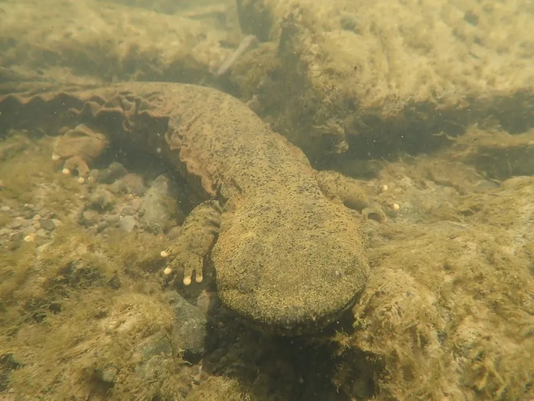

两栖动物 · 动物界
美洲大鲵 Cryptobranchus alleganiensis

北美东部溪流中的大型水栖蝾螈，体长可达七十厘米、皮肤松垂起皱，全靠皮肤呼吸，终生不离水，是隐鳃鲵科的北美代表。
- 分类
- 门脊索动物门纲两栖纲目有尾目科隐鳃鲵科属美洲大鲵属
- 栖息环境
- 水质清澈、溶氧充足的溪流、河流、泉水与大石块缝隙
- 地理分布
- 美国东部与中部的密西西比河流域、阿巴拉契亚山区及密苏里州等地
- 保护级别
- IUCN 易危（VU）；美国部分州列为受保护物种
物种志
美洲大鲵体长 30–70 厘米，个别可达 75 厘米，体重 1.5–2.5 千克，是北美最大的蝾螈之一。体形扁平粗壮，头部宽扁，眼小无眼睑，体侧皮肤松垂起皱、形成发达的皮褶，这些褶皱大大增加了皮肤表面积，用于在水中交换气体。体色多为灰褐、橄榄褐或锈褐色，背部散布深色斑块，腹部浅灰，四肢短粗，尾侧扁如鳍。
它们分布于美国东部与中部的清澈溪流、河流与泉水中，终生水栖，白天藏在岩石缝隙与倒木下，夜间出来捕食螯虾、小鱼、蜗牛、昆虫幼虫与其他蝾螈。它们没有肺，完全依靠皮肤与口腔黏膜呼吸，因此对水体溶氧量要求很高，是水质良好的指示物种。每年 8–9 月繁殖，雄鲵守护巢穴，雌鲵产下数百至上千枚卵串，孵化期约两三个月。泥沙淤积、筑坝与污染导致其栖息地退化，多地种群明显下降。
形态与习性
- 体长约 30–70 cm，个别可达 75 cm
- 体重约 1.5–2.5 kg
- 食性螯虾、小鱼、蜗牛、昆虫幼虫与其他蝾螈
- 呼吸方式无肺，全靠皮肤与口腔黏膜交换气体
- 繁殖8–9 月产卵，卵串数百至上千枚，孵化约两三个月
- 栖息要求需溶氧充足、底质多岩石的清澈流水，是水质指示种
- 寿命野外可达 30 年，饲养下超过 50 年
趣味知识
- 美洲大鲵没有肺，全靠一身松垂的皮肤在水里呼吸。
- 它皮肤上的褶皱不是赘肉，而是扩大呼吸面积的“鳃”。
- 因为对水质极挑剔，它出现的溪流通常意味着水体清洁。